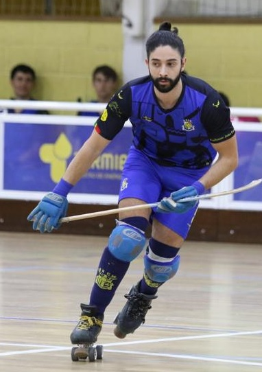

Gabriel Monginho

Summary
Hello, my name is Gabriel and I used to be a dental technician in CAD/CAM
technology. Nowadays I'm a IT student and I'm focused to be the best
professional possible.
Education
-
University Degree, Dental technician - Faculdade Medicina Dentária
da Universidade de Lisboa (2013-2016)
-
Especialização em Python, Python especialization - TokioSchool
(2022-2023)
Work Experience
-
Dental tecnician, CAD/CAM - ImplantCAD Lda.
2016 - 2020
- Implant Prothesis
- Removable Prothesis
- 3D Impress
- CAD/CAM software managing
- Stock management
-
Dental technician, CAD/CAM - Laboratório Nuno Teixeira
- CAD/CAM software managing
- 3D Impress
Skills
- Python ⭐️⭐️⭐️⭐️
- Flask ⭐️⭐️⭐️⭐️
- HTML⭐️⭐️⭐️⭐️
- CSS⭐️⭐️⭐️
Certifications